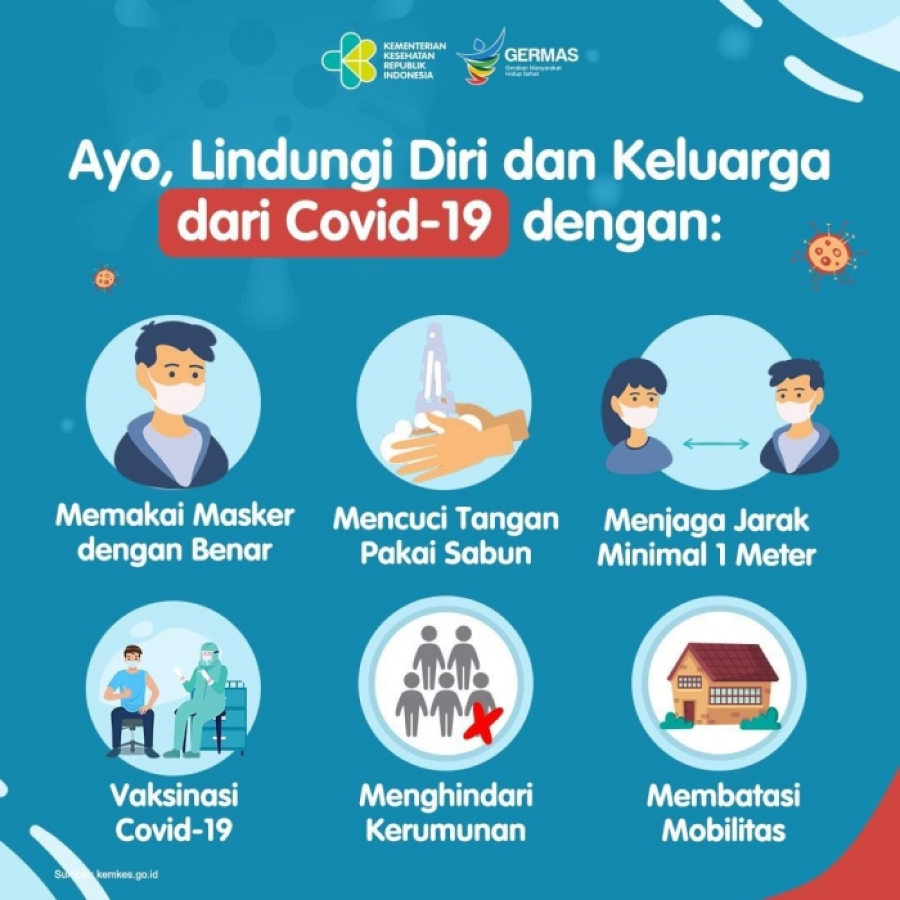

Protokol Kesehatan Covid-19
Mencuci Tangan
Rutin mencuci tangan hingga bersih adalah salah satu protokol kesehatan yang cukup efektif untuk mencegah penularan virus corona. Untuk hasil yang maksimal, kamu disarankan untuk mencuci tangan setidaknya selama 20 detik beberapa kali sehari, terutama saat:
- Sebelum memasak atau makan;
- Setelah menggunakan kamar mandi;
- Setelah menutup hidung saat batuk atau bersin.
Untuk membunuh virus dan kuman-kuman lainnya, gunakan sabun dan air atau pembersih tangan dengan alkohol setidaknya dengan kadar 60 persen.
Memakai Masker
Pada awal pandemi virus corona tahun lalu, Organisasi Kesehatan Dunia (WHO) mengatakan bahwa penggunaan masker hanya direkomendasikan untuk orang sakit, bukan orang sehat. Namun, virus corona jenis SARS-CoV-2 yang merajalela hingga saat ini membuat protokol kesehatan bisa berubah-ubah seiring bergulirnya waktu.
Beberapa waktu selang kebijakan WHO di atas, WHO akhirnya mengeluarkan himbauan agar semua orang (baik yang sehat atau sakit) agar selalu menggunakan masker saat beraktivitas di luar rumah. Kebijakan WHO ini juga sempat ditegaskan oleh Presiden Joko Widodo.
Protokol kesehatan virus corona terkait masker pun semakin digalakkan di beberapa negara. Di Amerika Serikat (AS), Centers for Disease Control and Prevention (CDC), memperbarui pedoman terkait penggunaan masker. CDC mengimbau masyarakat AS harus memakai masker meski berada di dalam rumah pada kondisi tertentu. Menurut CDC, penggunaan masker di dalam rumah perlu dilakukan ketika:
- Terdapat anggota keluarga yang terinfeksi COVID-19.
- Terdapat anggota keluarga yang berpotensi terkena COVID-19 karena aktivitas di luar rumah.
- Merasa terjangkit atau mengalami gejala COVID-19.
- Ruangan sempit.
- Tidak bisa menjaga jarak minimal dua meter.
Menjaga Jarak
Protokol kesehatan lainnya yang perlu dipatuhi adalah menjaga jarak. Protokol kesehatan ini dimuat dalam Keputusan Menteri Kesehatan RI dalam “Protokol Kesehatan Bagi Masyarakat di Tempat dan Fasilitas Umum Dalam Rangka Pencegahan dan Pengendalian COVID-19.”
Di sana disebutkan, menjaga jarak minimal 1 meter dengan orang lain untuk menghindari terkena droplets dari orang yang bicara, batuk, atau bersin, serta menghindari kerumunan, keramaian, dan berdesakan. Bila tidak memungkinkan melakukan jaga jarak, maka dapat dilakukan berbagai rekayasa administrasi dan teknis lainnya.
Rekayasa administrasi dapat berupa pembatasan jumlah orang, pengaturan jadwal, dan sebagainya. Sedangkan rekayasa teknis, antara lain dapat berupa pembuatan partisi, pengaturan jalur masuk dan keluar, dan sebagainya.
Menjauhi Kerumunan
Selain tiga hal di atas, menjauhi kerumunan merupakan protokol kesehatan yang juga harus dilakukan. Menurut Kementerian Kesehatan RI (Kemenkes), masyarakat diminta untuk menjauhi kerumunan saat berada di luar rumah. Ingat, semakin banyak dan sering kamu bertemu orang, maka kemungkinan terinfeksi virus corona pun semakin tinggi.
Oleh sebab itu, hindari tempat keramaian terutama bila sedang sakit atau berusia di atas 60 tahun (lansia). Menurut riset lansia dan pengidap penyakit kronis memiliki risiko yang lebih tinggi terserang virus corona.
Mengurangi Mobilitas
Virus penyebab corona bisa berada di mana saja. Jadi, semakin banyak dirimu menghabiskan waktu di luar rumah, maka semakin tinggi pula terpapar virus jahat ini. Oleh karena itu, bila tidak ada keperluan yang mendesak, tetaplah berada di rumah.
Menurut Kemenkes, meski sehat dan tidak ada gejala penyakit, belum tentu dirimu pulang ke rumah dengan keadaan yang masih sama. Pasalnya, virus corona dapat menyebar dan menginfeksi seseorang dengan cepat.